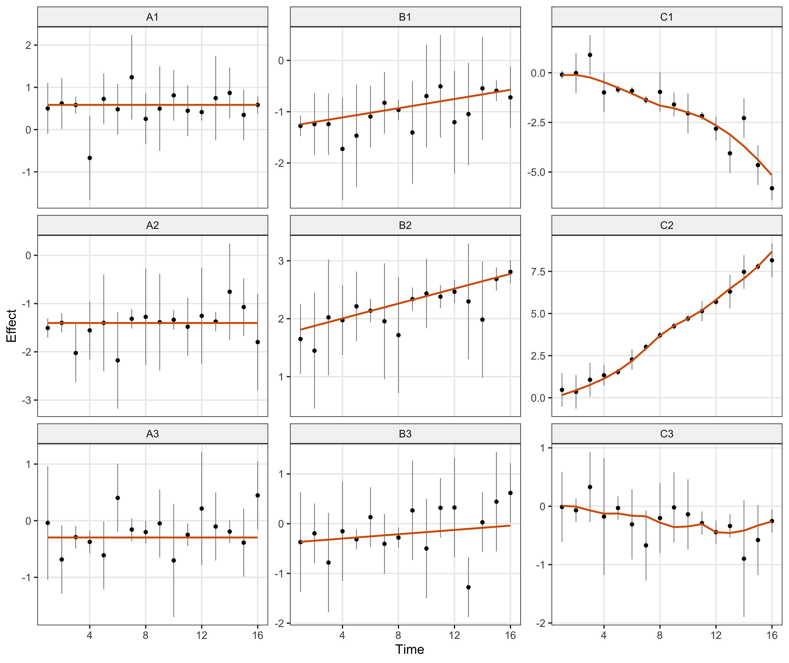
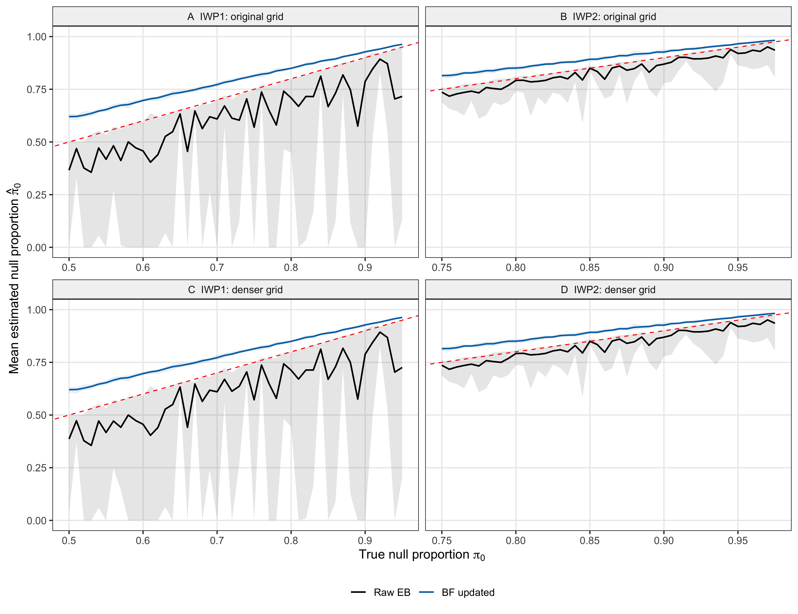
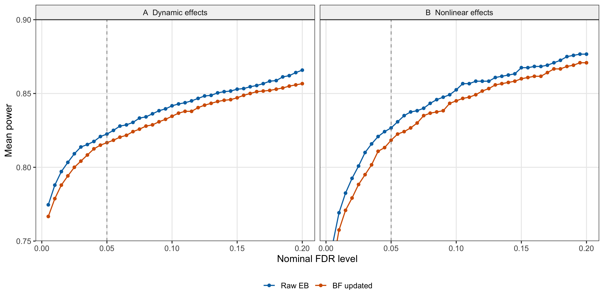
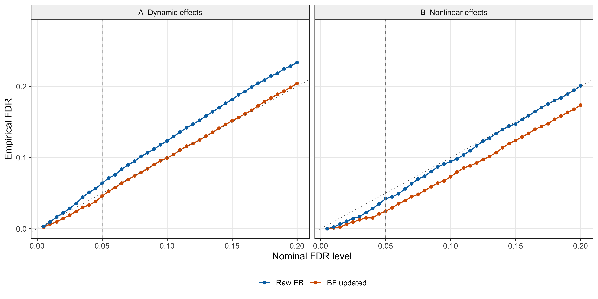
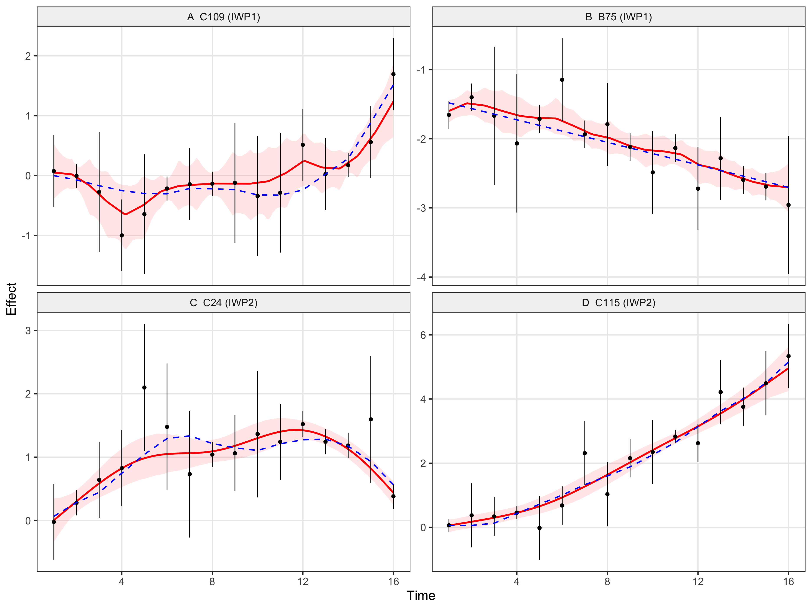

Last updated: 2026-09-18
Checks: 7 0
Knit directory: coderepo-local/
This reproducible R Markdown analysis was created with workflowr (version 1.7.2). The Checks tab describes the reproducibility checks that were applied when the results were created. The Past versions tab lists the development history.
Great! Since the R Markdown file has been committed to the Git repository, you know the exact version of the code that produced these results.
Great job! The global environment was empty. Objects defined in the global environment can affect the analysis in your R Markdown file in unknown ways. For reproduciblity it’s best to always run the code in an empty environment.
The command set.seed(20251109) was run prior to running
the code in the R Markdown file. Setting a seed ensures that any results
that rely on randomness, e.g. subsampling or permutations, are
reproducible.
Great job! Recording the operating system, R version, and package versions is critical for reproducibility.
Nice! There were no cached chunks for this analysis, so you can be confident that you successfully produced the results during this run.
Great job! Using relative paths to the files within your workflowr project makes it easier to run your code on other machines.
Great! You are using Git for version control. Tracking code development and connecting the code version to the results is critical for reproducibility.
The results in this page were generated with repository version 6e7a588. See the Past versions tab to see a history of the changes made to the R Markdown and HTML files.
Note that you need to be careful to ensure that all relevant files for
the analysis have been committed to Git prior to generating the results
(you can use wflow_publish or
wflow_git_commit). workflowr only checks the R Markdown
file, but you know if there are other scripts or data files that it
depends on. Below is the status of the Git repository when the results
were generated:
Ignored files:
Ignored: .DS_Store
Ignored: .Rhistory
Ignored: .Rproj.user/
Ignored: Rplots.pdf
Ignored: analysis/.DS_Store
Ignored: analysis/.Rhistory
Ignored: analysis/figure/
Ignored: analysis/site_libs/
Ignored: code/.DS_Store
Ignored: code/.Rhistory
Ignored: code/revision_simulations/.DS_Store
Ignored: data/appendixB/
Ignored: data/dynamic_eQTL_real/
Ignored: data/revision_simulations/
Ignored: data/toy_example/
Ignored: output/dynamic_eQTL_real/
Ignored: output/pdf/
Ignored: output/playwright/
Ignored: output/revision_simulations/
Ignored: scripts/
Untracked files:
Untracked: analysis/revision_internal_r3_two_stage_functional_testing.rmd
Untracked: code/revision_simulations/internal/per_unit_enhancer_enrichment/
Untracked: code/revision_simulations/internal/per_unit_expression_correlation/compare_corshrink_versions.R
Untracked: code/revision_simulations/internal/per_unit_expression_correlation/diagnose_discordant_calls.R
Untracked: code/revision_simulations/internal/per_unit_expression_correlation/diagnose_smooth_mismatch.R
Untracked: code/revision_simulations/internal/per_unit_expression_correlation/extract_perunit_lfdr.R
Untracked: code/revision_simulations/internal/per_unit_expression_correlation/plot_call_venns.R
Untracked: code/revision_simulations/internal/per_unit_expression_correlation/plot_class_variograms.R
Untracked: code/revision_simulations/internal/per_unit_expression_correlation/plot_corshrink_result.R
Untracked: code/revision_simulations/internal/per_unit_expression_correlation/plot_corshrink_versions.R
Untracked: code/revision_simulations/internal/per_unit_expression_correlation/plot_cs_vs_diagonal.R
Untracked: code/revision_simulations/internal/per_unit_expression_correlation/plot_day0_day1_distribution.R
Untracked: code/revision_simulations/internal/per_unit_expression_correlation/plot_mechanism_summary.R
Untracked: code/revision_simulations/internal/per_unit_expression_correlation/plot_perunit_variogram.R
Untracked: code/revision_simulations/internal/per_unit_expression_correlation/plot_strober_concordance.R
Untracked: code/revision_simulations/internal/per_unit_expression_correlation/plot_three_models.R
Untracked: code/revision_simulations/internal/per_unit_expression_correlation/prepare_reference_sets.R
Untracked: code/revision_simulations/internal/per_unit_expression_correlation/prototype_corshrink.R
Untracked: code/revision_simulations/internal/per_unit_expression_correlation/recover_design_factor.R
Untracked: code/revision_simulations/internal/per_unit_expression_correlation/test_corshrink_reimplementation.R
Note that any generated files, e.g. HTML, png, CSS, etc., are not included in this status report because it is ok for generated content to have uncommitted changes.
These are the previous versions of the repository in which changes were
made to the R Markdown (analysis/appendixB.rmd) and HTML
(docs/appendixB.html) files. If you’ve configured a remote
Git repository (see ?wflow_git_remote), click on the
hyperlinks in the table below to view the files as they were in that
past version.
| File | Version | Author | Date | Message |
|---|---|---|---|---|
| Rmd | 6e7a588 | Ziang Zhang | 2026-09-18 | Preserve horizontal padding for power endpoints |
| Rmd | 012aff2 | Ziang Zhang | 2026-09-18 | Show mean power and FDR as connected points |
| html | dea1967 | Ziang Zhang | 2026-09-18 | Publish updated ten-replicate simulation website |
| Rmd | 9d3e63f | Ziang Zhang | 2026-09-18 | Update simulation analysis to ten-replicate prior and BF comparison |
| Rmd | 09f63bc | Ziang Zhang | 2026-08-24 | Sync revision analyses and rendered pages |
| html | 09f63bc | Ziang Zhang | 2026-08-24 | Sync revision analyses and rendered pages |
| Rmd | c87957a | Ziang Zhang | 2026-08-10 | Add revision analyses: R1-R6 reviewer-facing pages and internal studies |
| html | 1871ea0 | Ziang Zhang | 2025-11-09 | Build site. |
| Rmd | 81a1637 | Ziang Zhang | 2025-11-09 | workflowr::wflow_publish("analysis/appendixB.rmd") |
This experiment evaluates null-weight estimation, discovery power, and empirical FDR when constant, linear, and nonlinear effect functions are fitted with FASH.
All fits use the pinned fashr 0.1.43 build. The ten
seeds are seq(12345L, by = 10000L, length.out = 10L).
At sixteen observed times \(t=1,\ldots,16\), each unit belongs to one of three classes:
Observed effects are independent Gaussian measurements of these functions, with standard errors drawn from \(\{0.1,0.3,0.5\}\) with equal probabilities. The grid experiment has \(J=1000\) units per dataset. The dynamic fraction \(\rho\) ranges from 0.05 to 0.50 in increments of 0.01; half of the dynamic units are linear and half nonlinear. The exact-null proportions are \(1-\rho\) for IWP1 and \(1-\rho/2\) for IWP2.
Both models use an unrestricted polynomial baseline and 20 basis functions. The positive shrinkage grid is equally spaced from 0 to 10 on the log-precision scale, with spacing 0.2 or 0.1, together with an exact-null component. Null-weight comparisons use penalty 1. The power/FDR experiment uses \(J=1200\), \(\rho=0.2\), the original grid, and penalty 10.
seeds <- seq(12345L, by = 10000L, length.out = 10L)
rho <- seq(0.05, 0.50, by = 0.01)
original_grid <- sort(c(0, exp(-0.5 * seq(0, 10, by = 0.2))))
denser_grid <- sort(c(0, exp(-0.5 * seq(0, 10, by = 0.1))))
grid_data <- build_appendix_b_datasets(J = 1000L,
rho_dynamic = rho_value, rho_nonlinear = rho_value / 2,
sigma_vec = c(0.1, 0.3, 0.5))
focused_data <- build_appendix_b_datasets(J = 1200L,
rho_dynamic = 0.2, rho_nonlinear = 0.1,
sigma_vec = c(0.1, 0.3, 0.5))
# Exact Gaussian integration uses the package's basis and prior precision.
# Package EB optimization and BF updating are unchanged.
focused_fit <- c1_fit_models(focused_data, original_grid,
penalty = 10, num_basis = 20L, num_cores = 1L)# Choose the first three units per truth class, independently of discoveries.
truth <- report$focused$data_bundle$truth
chosen <- unlist(lapply(c("nondynamic", "linear", "nonlinear"), function(class) {
head(which(truth$class == class), 3L)
}))
example_data <- do.call(rbind, lapply(chosen, function(index) {
cbind(unit_id = truth$unit_id[index], class = truth$class[index],
report$focused$data_bundle$data_list[[index]])
}))
panel_ids <- as.vector(t(matrix(truth$unit_id[chosen], nrow = 3)))
example_data$panel <- factor(example_data$unit_id, levels = panel_ids)
ggplot(example_data, aes(x, y)) +
geom_errorbar(aes(ymin = y - 2 * sd, ymax = y + 2 * sd), width = 0,
color = "grey55", linewidth = 0.35) + geom_point(size = 1.15) +
geom_line(aes(y = truef), color = "#D55E00", linewidth = 0.8) +
facet_wrap(~panel, ncol = 3, scales = "free_y") +
labs(x = "Time", y = "Effect") + c1_plot_theme()
Figure 1. Simulated observations and true effects from the first prespecified repetition. Columns show constant, linear dynamic, and nonlinear dynamic truth. Black points and gray bars show observed estimates and +/-2 standard errors; orange curves show the true effects.
| Version | Author | Date |
|---|---|---|
| dea1967 | Ziang Zhang | 2026-09-18 |
There are 92 combinations of dynamic fraction and shrinkage grid, each with ten repetitions and both FASH orders. Raw IWP1 has 54 zero-boundary null-weight estimates among its 920 fits. BF-adjusted estimates fall below the true null proportion in 0 of the 1,840 order-specific fits.
null_curves <- grid_summary[, c("setting", "rho_dynamic", "order", "stage",
"true_pi0", "mean_pi0", "pi0_min", "pi0_max", "n_replicates")]
stopifnot(all(null_curves$n_replicates == 10L))
null_curves$stage <- factor(null_curves$stage, c("Raw EB", "BF updated"))
null_curves$panel <- factor(paste(null_curves$setting, null_curves$order, sep = ":"),
c("original:IWP1", "original:IWP2", "denser:IWP1", "denser:IWP2"),
c("A IWP1: original grid", "B IWP2: original grid",
"C IWP1: denser grid", "D IWP2: denser grid"))
stopifnot(!anyNA(null_curves$panel))
ggplot(null_curves, aes(true_pi0, mean_pi0, color = stage, fill = stage)) +
geom_ribbon(aes(ymin = pi0_min, ymax = pi0_max), alpha = 0.10,
color = NA, show.legend = FALSE) + geom_line(linewidth = 0.7) +
geom_abline(slope = 1, intercept = 0, color = "red", linetype = "dashed", linewidth = 0.45) +
facet_wrap(~panel, ncol = 2, scales = "free_x") +
scale_color_manual(values = c("Raw EB" = "black", "BF updated" = "#0072B2")) +
scale_fill_manual(values = c("Raw EB" = "black", "BF updated" = "#0072B2")) +
coord_cartesian(ylim = c(0, 1)) +
labs(x = expression("True null proportion " * pi[0]),
y = expression("Mean estimated null proportion " * hat(pi)[0]), color = NULL, fill = NULL) +
c1_plot_theme()
Figure 2. Mean estimated null weight over ten repetitions per setting. Columns show IWP1 and IWP2; rows show the original and denser grids. Black denotes Raw EB, blue BF adjustment, and the red dashed line equality. Ribbons show pointwise replicate minima and maxima, including zero-boundary estimates.
| Version | Author | Date |
|---|---|---|
| dea1967 | Ziang Zhang | 2026-09-18 |
For each repetition \(b\), discoveries \(D_b(\alpha)\) are selected by cumulative mean lfdr. With true null and alternative sets \(H_{0b}\) and \(H_{1b}\), the plotted empirical FDR is
\[ \widehat{\mathrm{FDR}}(\alpha)=\frac{1}{10}\sum_{b=1}^{10} \frac{|D_b(\alpha)\cap H_{0b}|}{\max\{|D_b(\alpha)|,1\}}. \]
Power is the mean of \(|D_b(\alpha)\cap H_{1b}|/|H_{1b}|\) across the same ten repetitions. Both rates include every repetition. Points connected by lines show the ten-repetition means.
power_curves <- alpha_summary[, c("order", "stage", "alpha", "mean_power",
"power_min", "power_max", "n_replicates")]
stopifnot(all(power_curves$n_replicates == 10L))
power_curves$stage <- factor(power_curves$stage, c("Raw EB", "BF updated"))
power_curves$panel <- factor(power_curves$order, c("IWP1", "IWP2"),
c("A Dynamic effects", "B Nonlinear effects"))
ggplot(power_curves, aes(alpha, mean_power, color = stage)) +
geom_line(linewidth = 0.65) + geom_point(size = 1.4) +
geom_vline(xintercept = 0.05, color = "grey50", linetype = "dashed", linewidth = 0.4) +
facet_wrap(~panel, nrow = 1) +
scale_color_manual(values = c("Raw EB" = "#0072B2", "BF updated" = "#D55E00")) +
scale_y_continuous(breaks = seq(0.75, 0.90, by = 0.05),
expand = expansion(mult = 0)) +
coord_cartesian(ylim = c(0.75, 0.90)) +
labs(x = "Nominal FDR level", y = "Mean power", color = NULL, fill = NULL) + c1_plot_theme()
Figure 3. Mean discovery power over ten repetitions (J = 1,200). Panels A and B show dynamic and nonlinear testing. Points connected by lines show ten-repetition mean power. The vertical line marks nominal FDR 0.05.
| Version | Author | Date |
|---|---|---|
| dea1967 | Ziang Zhang | 2026-09-18 |
fdr_curves <- alpha_summary[, c("order", "stage", "alpha", "mean_empirical_fdr",
"empirical_fdr_min", "empirical_fdr_max", "n_replicates")]
stopifnot(all(fdr_curves$n_replicates == 10L))
fdr_curves$stage <- factor(fdr_curves$stage, c("Raw EB", "BF updated"))
fdr_curves$panel <- factor(fdr_curves$order, c("IWP1", "IWP2"),
c("A Dynamic effects", "B Nonlinear effects"))
ggplot(fdr_curves, aes(alpha, mean_empirical_fdr, color = stage)) +
geom_line(linewidth = 0.65) + geom_point(size = 1.4) +
geom_abline(slope = 1, intercept = 0, color = "grey35", linetype = "dotted", linewidth = 0.4) +
geom_vline(xintercept = 0.05, color = "grey50", linetype = "dashed", linewidth = 0.4) +
facet_wrap(~panel, nrow = 1) +
scale_color_manual(values = c("Raw EB" = "#0072B2", "BF updated" = "#D55E00")) +
coord_cartesian(ylim = c(0, max(0.2, 1.05 * fdr_curves$empirical_fdr_max))) +
labs(x = "Nominal FDR level", y = "Empirical FDR", color = NULL, fill = NULL) + c1_plot_theme()
Figure 4. Empirical FDR over the same ten repetitions. Panels A and B show dynamic and nonlinear testing. Points connected by lines show the mean of replicate false-discovery proportions. The diagonal marks nominal calibration and the vertical line nominal FDR 0.05.
| Version | Author | Date |
|---|---|---|
| dea1967 | Ziang Zhang | 2026-09-18 |
At nominal FDR 0.05, BF adjustment changes empirical FDR from 0.064 to 0.046 for dynamic testing, and from 0.042 to 0.025 for nonlinear testing. The corresponding power changes are 0.823 to 0.817 and 0.827 to 0.818.
tab <- at005[order(match(at005$order, c("IWP1", "IWP2")),
match(at005$stage, c("Raw EB", "BF updated"))),
c("order", "stage", "mean_discoveries", "mean_power", "mean_empirical_fdr")]
names(tab) <- c("Model", "Prior", "Mean discoveries", "Mean power", "Empirical FDR")
knitr::asis_output(paste0('<div class="c1-table">',
knitr::kable(tab, format = "html", row.names = FALSE, digits = c(0, 0, 1, 3, 3),
caption = "Table 1. Ten-repetition mean results at nominal FDR 0.05."), '</div>'))| Model | Prior | Mean discoveries | Mean power | Empirical FDR |
|---|---|---|---|---|
| IWP1 | Raw EB | 210.9 | 0.823 | 0.064 |
| IWP1 | BF updated | 205.4 | 0.817 | 0.046 |
| IWP2 | Raw EB | 103.6 | 0.827 | 0.042 |
| IWP2 | BF updated | 100.7 | 0.818 | 0.025 |
Figure 5 retains four prespecified examples from seed 12345. All four are selected at nominal FDR 0.05 by their respective BF-adjusted models. Posterior summaries use 3,000 draws evaluated at time-grid step 0.1.
predictions <- display$predictions; observations <- display$observations
labels <- c("A C109 (IWP1)", "B B75 (IWP1)", "C C24 (IWP2)", "D C115 (IWP2)")
predictions$panel <- factor(predictions$panel, LETTERS[1:4], labels)
observations$panel <- factor(observations$panel, LETTERS[1:4], labels)
stopifnot(!anyNA(predictions$panel), !anyNA(observations$panel))
ggplot(predictions, aes(x, mean)) +
geom_ribbon(aes(ymin = lower, ymax = upper), fill = "red", alpha = 0.10) +
geom_line(color = "red", linewidth = 0.8) +
geom_errorbar(data = observations, aes(x = x, ymin = y - 2 * sd, ymax = y + 2 * sd),
inherit.aes = FALSE, width = 0, linewidth = 0.35) +
geom_point(data = observations, aes(x, y), inherit.aes = FALSE, size = 1.1) +
geom_line(data = observations, aes(x, truef), inherit.aes = FALSE,
color = "blue", linetype = "dashed", linewidth = 0.6) +
facet_wrap(~panel, ncol = 2, scales = "free_y") +
labs(x = "Time", y = "Effect") + c1_plot_theme()
Figure 5. Posterior examples from seed 12345. Top: IWP1 dynamic testing; bottom: IWP2 nonlinear testing. Black points and bars show estimates and +/-2 standard errors. Red curves and bands show posterior means and pointwise 95% credible intervals; blue dashed curves show truth.
| Version | Author | Date |
|---|---|---|
| dea1967 | Ziang Zhang | 2026-09-18 |
The runner, equivalence tests, and reporting gate are in
code/revision_simulations/internal/appendix_c1_mc10/. The
original generator and pinned package EB/BF routines are retained. Exact
Gaussian integration uses the package’s basis and precision matrices;
likelihood and posterior-score equivalence with TMB are checked before
production. Original and denser grids have identical input hashes within
each seed and dynamic fraction.
Rscript --vanilla code/revision_simulations/internal/appendix_c1_mc10/test_mc10.R
FASH_C1_WORKERS=4 Rscript --vanilla code/revision_simulations/internal/appendix_c1_mc10/run_appendix_c1_mc10.R
Rscript --vanilla code/revision_simulations/internal/appendix_c1_mc10/build_display_cache.RCompleted results are in
output/revision_simulations/internal/appendix_c1_mc10_fashr0143_20260918/.
Page builds validate and read this cache without rerunning
simulations.
sessionInfo()R version 4.5.1 (2025-06-13)
Platform: aarch64-apple-darwin20
Running under: macOS Sequoia 15.6.1
Matrix products: default
BLAS: /System/Library/Frameworks/Accelerate.framework/Versions/A/Frameworks/vecLib.framework/Versions/A/libBLAS.dylib
LAPACK: /Library/Frameworks/R.framework/Versions/4.5-arm64/Resources/lib/libRlapack.dylib; LAPACK version 3.12.1
locale:
[1] C.UTF-8/C.UTF-8/C.UTF-8/C/C.UTF-8/C.UTF-8
time zone: America/Chicago
tzcode source: internal
attached base packages:
[1] stats graphics grDevices utils datasets methods base
other attached packages:
[1] ggplot2_4.0.3 workflowr_1.7.2
loaded via a namespace (and not attached):
[1] gtable_0.3.6 jsonlite_2.0.0 dplyr_1.1.4 compiler_4.5.1
[5] promises_1.5.0 tidyselect_1.2.1 Rcpp_1.1.1-1.1 stringr_1.6.0
[9] git2r_0.36.2 dichromat_2.0-0.1 callr_3.7.6 later_1.4.4
[13] jquerylib_0.1.4 scales_1.4.0 yaml_2.3.12 fastmap_1.2.0
[17] R6_2.6.1 labeling_0.4.3 generics_0.1.4 knitr_1.50
[21] tibble_3.3.0 rprojroot_2.1.1 RColorBrewer_1.1-3 bslib_0.9.0
[25] pillar_1.11.1 rlang_1.2.0 cachem_1.1.0 stringi_1.8.9
[29] httpuv_1.6.16 xfun_0.55 S7_0.2.2 getPass_0.2-4
[33] fs_1.6.6 sass_0.4.10 otel_0.2.0 cli_3.6.6
[37] withr_3.0.3 magrittr_2.0.5 ps_1.9.1 grid_4.5.1
[41] digest_0.6.39 processx_3.8.6 rstudioapi_0.17.1 lifecycle_1.0.5
[45] vctrs_0.7.3 evaluate_1.0.5 glue_1.8.1 farver_2.1.2
[49] whisker_0.4.1 rmarkdown_2.30 httr_1.4.7 tools_4.5.1
[53] pkgconfig_2.0.3 htmltools_0.5.9